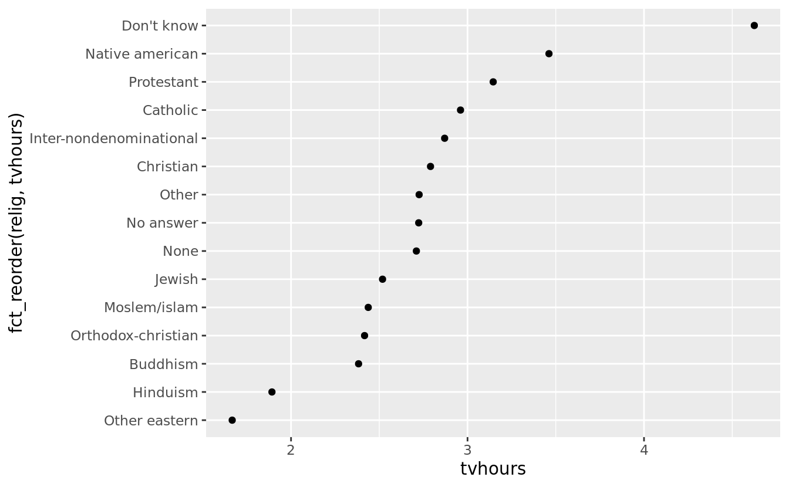
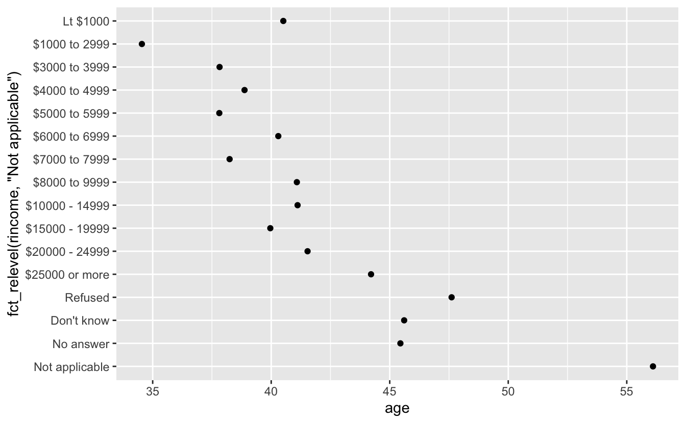
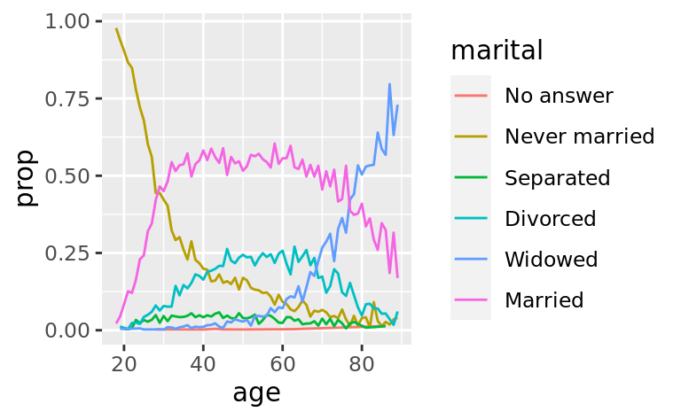
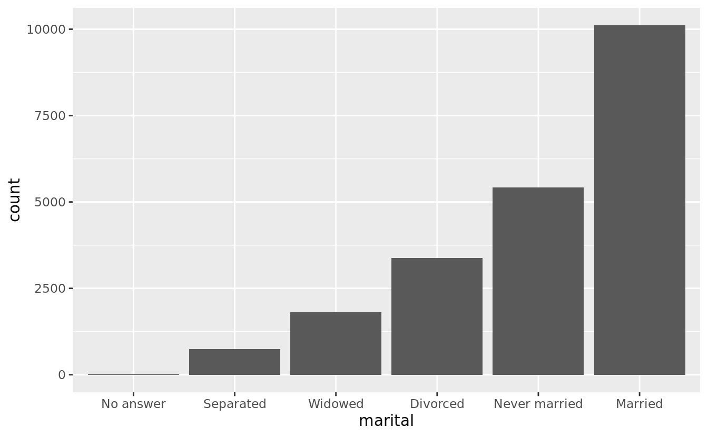

9 팩터형
9.1 들어가기
R에서 팩터형은 범주형 변수에 사용되는데, 범주형 변수란 가질 수 있는 값이 미리 고정되고 또 알려진 변수를 말한다. 팩터형은 문자형 벡터를 알파벳순이 아닌 순서로 표시하고 싶을 때도 이용할 수 있다.
역사적으로 팩터형은 문자형보다 다루기가 훨씬 쉬웠다. 이런 이유로 베이스R 의 함수들은 문자형을 자동으로 팩터형으로 변환한다. 즉, 팩터형이 사실 도움이 되지 않는 경우에서도, 나타나는 경우가 많다. 다행스럽게도 tidyverse에서는 이런 경우를 걱정할 필요가 없으며 팩터형이 실제로 유용한 경우에만 집중할 수 있다.
9.1.1 준비하기
팩터형을 다루기 위해, forcats 패키지를 사용할 것인데, 이 패키지에는 범주형 변수(팩터형의 다른 말)에 적용하는 도구들이 있다.<주석> 이 패키지는 팩터형에 적용하는 도우미 함수를 다양하게 제공한다. forcats 는 핵심 tidyverse에 포함되어 있지 않기 때문에 명시적으로 로드해야 한다.
library(tidyverse)
library(forcats)9.1.2 더 배우기
팩터형에 대해 더 알고 싶으면, 아멜리아 맥나마라(Amelia McNamara) 와 니콜라스 호튼(Nicholas Horton)의 논문, Wrangling categorical data in R 을 추천한다. 이 논문은 로저 펭(Roger Peng)의 stringsAsFactors: An unauthorized biography 와 토마스 럼리(Thomas Lumley)의 stringsAsFactors = <sigh> 에서 논의한 역사를 담고 있고, 범주형 변수에 대해 이 책에서 설명한 타이디 접근법과 베이스 R 방법을 비교한다. 이 논문의 초기버전은 forcats 패키지를 만드는데 동기를 부여하였다.
9.2 팩터형 생성하기
월을 기록한 변수가 있다고 가정하자.
x1 <- c("Dec", "Apr", "Jan", "Mar")이 변수를 문자열을 이용하여 기록하면 두 가지 문제가 생긴다.
가능한 달이 열두 개만 있고, 오타가 입력되어도 보호받을 수 없다.
x2 <- c("Dec", "Apr", "Jam", "Mar")유용한 순서로 정렬되지 않는다.
sort(x1) #> [1] "Apr" "Dec" "Jan" "Mar"
팩터형을 이용하면 이러한 문제를 모두 해결할 수 있다. 팩터형을 생성하기 위해 유효한 레벨들의 리스트를 생성하는 것부터 시작해야 한다.
month_levels <- c(
"Jan", "Feb", "Mar", "Apr", "May", "Jun",
"Jul", "Aug", "Sep", "Oct", "Nov", "Dec"
)이제 팩터형을 생성할 수 있다.
y1 <- factor(x1, levels = month_levels)
y1
#> [1] Dec Apr Jan Mar
#> Levels: Jan Feb Mar Apr May Jun Jul Aug Sep Oct Nov Dec
sort(y1)
#> [1] Jan Mar Apr Dec
#> Levels: Jan Feb Mar Apr May Jun Jul Aug Sep Oct Nov Dec그리고 이 레벨 집합에 포함되지 않는 값은 조용히 NA 로 변환된다.
y2 <- factor(x2, levels = month_levels)
y2
#> [1] Dec Apr <NA> Mar
#> Levels: Jan Feb Mar Apr May Jun Jul Aug Sep Oct Nov Dec경고가 발생되길 원하는 경우에는 readr::parse_factor() 를 사용하면 된다.
y2 <- parse_factor(x2, levels = month_levels)
#> Warning: 1 parsing failure.
#> row col expected actual
#> 3 -- value in level set Jam앞의 levels 를 생략하면 데이터로부터 알파벳 순서로 취할 것이다.
factor(x1)
#> [1] Dec Apr Jan Mar
#> Levels: Apr Dec Jan Mar때때로 레벨의 순서가 데이터에서 처음으로 등장하는 순서와 일치되길 원할 수 있다. 팩터형 생성 시 레벨을 unique(x) 로 설정하거나 사후적으로는 fct_inorder() 를 사용하면 된다.
f1 <- factor(x1, levels = unique(x1))
f1
#> [1] Dec Apr Jan Mar
#> Levels: Dec Apr Jan Mar
f2 <- x1 %>% factor() %>% fct_inorder()
f2
#> [1] Dec Apr Jan Mar
#> Levels: Dec Apr Jan Mar만약 유효한 레벨 집합에 직접 접근하려면 levels() 로 할 수 있다.
levels(f2)
#> [1] "Dec" "Apr" "Jan" "Mar"9.4 팩터 순서 수정하기
시각화에서 팩터 레벨의 순서를 변경하는 것이 유용할 때가 종종 있다. 예를 들어 종교에 따른 하루 TV 시청시간의 평균을 탐색하고 싶다고 가정하자.
relig_summary <- gss_cat %>%
group_by(relig) %>%
summarise(
age = mean(age, na.rm = TRUE),
tvhours = mean(tvhours, na.rm = TRUE),
n = n()
)
ggplot(relig_summary, aes(tvhours, relig)) + geom_point()
전반적인 패턴이 없기 때문에 이 플롯을 해석하기는 어렵다. fct_reorder() 를 사용하여 relig 의 레벨을 재정렬해서 개선할 수 있다. fct_reorder() 에는 세 개의 인수가 있다.
f: 레벨을 수정할 팩터x: 레벨을 재정렬하기 위해 사용할 수치형 벡터- 선택적으로
fun:f의 각 값에 대해x값이 여러 개가 있을 경우, 사용할 함수. 기본값은median이다.
ggplot(relig_summary, aes(tvhours, fct_reorder(relig, tvhours))) +
geom_point()
종교를 재배열하면 ’모름(Don’t know)’ 범주의 사람들이 TV를 훨씬 많이 보고, 힌두교와 다른 동양 종교 사람들이 훨씬 덜 본다는 것을 쉽게 알 수 있다.
좀 더 복잡한 변환을 해야 된다면 aes() 내부보다는 별도의 mutate() 단계에서 변환할 것을 추천한다. 예를 들어 앞의 플롯을 다음과 같이 다시 작성할 수 있다.
relig_summary %>%
mutate(relig = fct_reorder(relig, tvhours)) %>%
ggplot(aes(tvhours, relig)) +
geom_point()보고된 소득 레벨에 따라 평균 나이가 어떻게 변화하는지를 보여주는 플롯을 유사하게 만들어 보면 어떨까?
rincome_summary <- gss_cat %>%
group_by(rincome) %>%
summarise(
age = mean(age, na.rm = TRUE),
tvhours = mean(tvhours, na.rm = TRUE),
n = n()
)
ggplot(rincome_summary, aes(age, fct_reorder(rincome, age))) + geom_point()
여기에서 레벨을 임의로 재정렬하는 것은 좋은 생각이 아니다! rincome 은 이미 원칙 있게 정렬되어 있어서 건드리지 말아야 하기 때문이다. fct_reorder() 는 레벨이 임의적으로 정렬된 팩터의 경우에만 사용해야 한다.
한편, ’해당 없음(Not applicable)’을 다른 특별한 레벨들과 함께 앞으로 가져오는 것이 좋다. fct_relevel() 을 사용하면 된다. 이 함수는 팩터, f 와 앞으로 옮기고자 하는 레벨(개수에 관계 없음)을 취한다.
ggplot(rincome_summary, aes(age, fct_relevel(rincome, "Not applicable"))) +
geom_point()
‘Not applicable’ 의 평균 연령이 왜 이렇게 높을까?
재정렬이 유용한 경우가 또 있는데, 플롯의 선에 색상을 입힐 때이다. fct_reorder2() 는 가장 큰 x 값과 연관된 y 값으로 팩터를 재정렬 한다. 선 색상은 범례와 정렬되므로 이렇게 하면 플롯을 읽기 쉬워진다.
by_age <- gss_cat %>%
filter(!is.na(age)) %>%
count(age, marital) %>%
group_by(age) %>%
mutate(prop = n / sum(n))
ggplot(by_age, aes(age, prop, colour = marital)) +
geom_line(na.rm = TRUE)
ggplot(by_age, aes(age, prop, colour = fct_reorder2(marital, age, prop))) +
geom_line() +
labs(colour = "marital")
마지막으로, fct_infreq() 를 사용하여 빈도 오름차순으로 레벨을 정렬할 수 있다. 추가 변수가 필요 없기 때문에, 재정렬 방법 중 가장 간단한 유형이다. fct_rev() 와 조합하여 사용할 수 있다.
gss_cat %>%
mutate(marital = marital %>% fct_infreq() %>% fct_rev()) %>%
ggplot(aes(marital)) +
geom_bar()
9.4.1 연습문제
tvhours에 의심스러운 큰 숫자들이 몇 있다. 평균(mean)은 좋은 요약값인가?gss_cat의 각 팩터형에 대해 레벨의 순서가 임의적인지 원칙적인지를 확인하라.’해당 없음’을 레벨 앞으로 옮기면, 왜 플롯의 맨 아래로 옮겨지는가?
9.5 팩터 레벨 수정하기
레벨의 순서를 변경하는 것보다 더 강력한 것은 값을 변경하는 것이다. 이렇게 하면 출판 시 라벨을 명확히 할 수 있고, 레벨을 병합하여 상위 레벨 시각화를 할 수 있다. 가장 일반적이고 강력한 것은 fct_recode() 이다. 이를 사용하여 각 레벨값을 다시 코드하거나, 변경할 수 있다. 예를 들어 gss_cat$partyid 를 보자.
gss_cat %>% count(partyid)
#> # A tibble: 10 x 2
#> partyid n
#> <fct> <int>
#> 1 No answer 154
#> 2 Don't know 1
#> 3 Other party 393
#> 4 Strong republican 2314
#> 5 Not str republican 3032
#> 6 Ind,near rep 1791
#> # ... with 4 more rows이 레벨들은 짧고 일관성이 없다. 이 레벨들을 풀어쓰고, 병렬 구조를 사용해보자.
gss_cat %>%
mutate(partyid = fct_recode(partyid,
"Republican, strong" = "Strong republican",
"Republican, weak" = "Not str republican",
"Independent, near rep" = "Ind,near rep",
"Independent, near dem" = "Ind,near dem",
"Democrat, weak" = "Not str democrat",
"Democrat, strong" = "Strong democrat"
)) %>%
count(partyid)
#> # A tibble: 10 x 2
#> partyid n
#> <fct> <int>
#> 1 No answer 154
#> 2 Don't know 1
#> 3 Other party 393
#> 4 Republican, strong 2314
#> 5 Republican, weak 3032
#> 6 Independent, near rep 1791
#> # ... with 4 more rowsfct_recode() 는 명시적으로 언급되지 않은 레벨은 그대로 둔다. 존재하지 않은 레벨을 참조하면 경고를 발생한다.
그룹을 결합하려면 이전 레벨들을 같은 새로운 레벨로 할당하면 된다.
gss_cat %>%
mutate(partyid = fct_recode(partyid,
"Republican, strong" = "Strong republican",
"Republican, weak" = "Not str republican",
"Independent, near rep" = "Ind,near rep",
"Independent, near dem" = "Ind,near dem",
"Democrat, weak" = "Not str democrat",
"Democrat, strong" = "Strong democrat",
"Other" = "No answer",
"Other" = "Don't know",
"Other" = "Other party"
)) %>%
count(partyid)
#> # A tibble: 8 x 2
#> partyid n
#> <fct> <int>
#> 1 Other 548
#> 2 Republican, strong 2314
#> 3 Republican, weak 3032
#> 4 Independent, near rep 1791
#> 5 Independent 4119
#> 6 Independent, near dem 2499
#> # ... with 2 more rows이 기술은 신중하게 사용해야 한다. 서로 같지 않은 범주들을 함께 묶는다면 잘못된 결과를 도출하게 될 것이다.
다수의 레벨을 병합하고자 하면 fct_recode() 의 변형 함수인 fct_collapse() 가 편리하다. 각각의 새로운 변수에 대해 이전 레벨로 이루어진 벡터를 제공해야 한다.
gss_cat %>%
mutate(partyid = fct_collapse(partyid,
other = c("No answer", "Don't know", "Other party"),
rep = c("Strong republican", "Not str republican"),
ind = c("Ind,near rep", "Independent", "Ind,near dem"),
dem = c("Not str democrat", "Strong democrat")
)) %>%
count(partyid)
#> # A tibble: 4 x 2
#> partyid n
#> <fct> <int>
#> 1 other 548
#> 2 rep 5346
#> 3 ind 8409
#> 4 dem 7180가끔은 플롯이나 테이블을 간단하게 만들기 위해 소규모 그룹 모두를 묶고 싶을 수도 있다. fct_lump() 가 바로 이 작업을 한다.
gss_cat %>%
mutate(relig = fct_lump(relig)) %>%
count(relig)
#> # A tibble: 2 x 2
#> relig n
#> <fct> <int>
#> 1 Protestant 10846
#> 2 Other 10637기본 동작은 묶은 그룹이 가장 작은 그룹이 되는 조건을 유지하면서 작은 그룹들을 점진적으로 묶는다. 위의 경우에는 매우 도움이 되지는 않는다. 즉, 이 조사에서 대부분의 미국인이 개신교인 것은 사실이지만, 아마도 우리는 과하게 병합한 것 같다.
대신, n 인수를 사용하여 유지하고 싶은 그룹 개수(other 제외)를 지정할 수 있다.
gss_cat %>%
mutate(relig = fct_lump(relig, n = 10)) %>%
count(relig, sort = TRUE) %>%
print(n = Inf)
#> # A tibble: 10 x 2
#> relig n
#> <fct> <int>
#> 1 Protestant 10846
#> 2 Catholic 5124
#> 3 None 3523
#> 4 Christian 689
#> 5 Other 458
#> 6 Jewish 388
#> 7 Buddhism 147
#> 8 Inter-nondenominational 109
#> 9 Moslem/islam 104
#> 10 Orthodox-christian 959.5.1 연습문제
민주당(Democrat), 공화당(Republican), 독립정당(Independent)의 비율이 시간이 지남에 따라 어떻게 변화했는가?
어떻게
rincome을 적은 범주 집합으로 병합할 수 있겠는가?